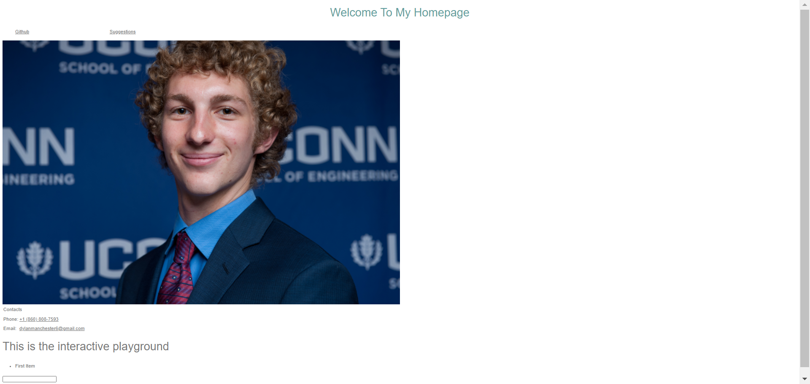
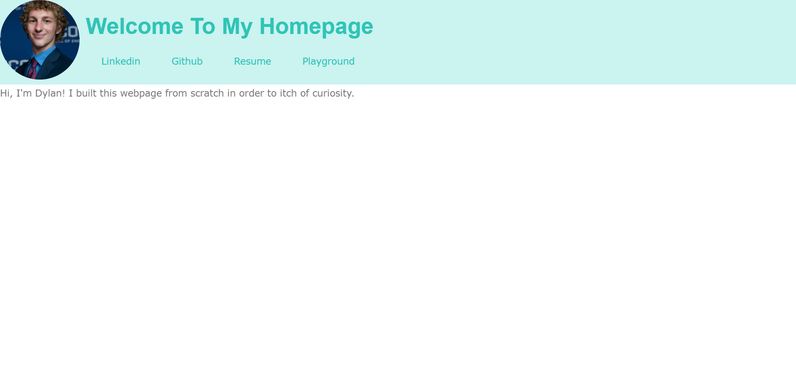
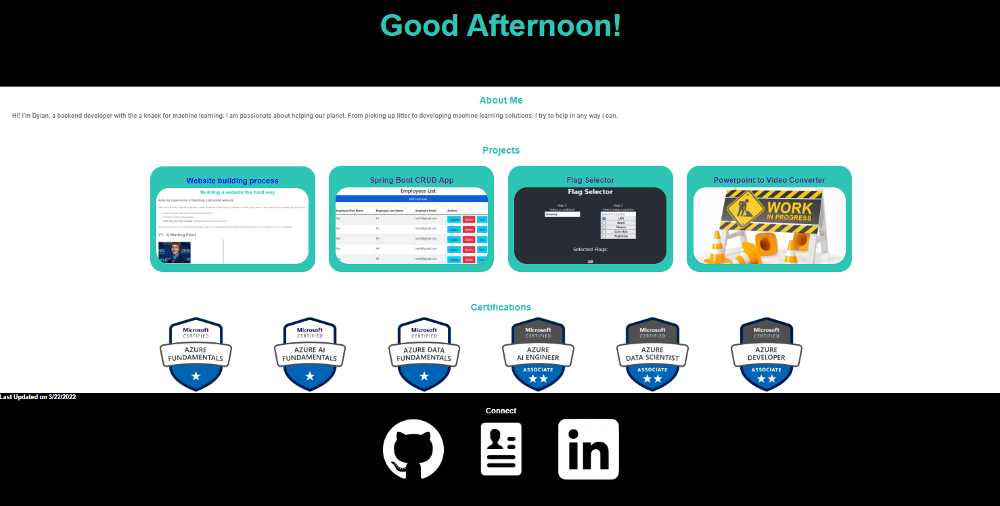

Building a website the hard way
AKA my experience of building a personal website
After being forced to register a domain in order to submit a final project, I decided to make good use of it and build my own website. My goals were:
- Learn a thing or two about frontend development
- Promote myself professionally
- And only use free services (besides already buying a domain)
This is both a diary for myself (since git history can be unintelligible) and a guide/warning to others who dare take on such a challenge.
V1 - A Starting Point
I had a little experience with HTML, CSS, and JavaScript from random classes and talks, so I combined everything I knew into this mess of a site. It is pretty bare bones with almost everything layed out vertically. Not to mention how my oversized mugshot takes up the majority of the screen. Not all that proud of it now, but it was a good starting point. If you need your own starting point to learn HTML & CSS, I would recommend this tutorial.
Useful parts:
- File structure - Import separated CSS and JavaScript files:
<link rel="stylesheet" type="text/css" href="style.css"><script src="script.js"></script>
- Simple navigation bar can be created from a list:
display: inlineCSS property forlidisplays them horizontallytarget="_blank"property inatag opens link in a new tab
- JavaScript is powerful for bringing a static webpage to life:
- Turn on/off a class:
this.classList.toggle('red') - Create entire elements:
document.createElement('button') - Custom events:
submit.addEventListener('click',addItem);
- Turn on/off a class:
V2 - Thematic Coloring and Motion
This stage of my development consisted of looking at templates and example sites in order to learn from professionals. Unfortunately lots of modern sites are generated by frameworks which make the code terribly unreadable. The two things I did learn were that the best sites have nice color schemes and smooth motion.
To choose my color scheme I used this well designed palette generator and to add some motion I imported Animate.css which had excellent documentation.
Useful Parts:
- User action psuedo-classes provide a more responsive experience
- Any css in
a:hoveris applied when the user hovers over a link
- Any css in
- Thematic color schemes make site wide color changes easier:
- Define colors in
:rootpsuedo-class with--primary-color: #2ec4b6; - Reference colors anywhere with
color: var(--primary-color);
- Define colors in
- Adding
border-radius: 50%property to images makes them circular
V2.5 - Hosting
Now would be a great time to mention how my site is actually hosted because it took me far too long to get to this point. Simply enough, it is hosted on Github Pages. After a long struggle, I could not figure out how to get a free SSL certificate (the little lock sign you see on chrome) without configuring a custom domain with Github Pages.
My first idea for a free hosting platform was an AWS EC2 micro instance which is free for a year.
Note: There can be additional costs for sending over 15GB of data out of an EC2 instance
Using Docker I was able to develop my website locally and deploy it to an NGINX image that can be run on the AWS server. As I went down this rabbit hole, I also learned about GitHub Actions to automatically build docker images. I do not regret dumping countless hours into this because it was a great learning experience, but it was not a sustainably free solution.
V3 - Refactor and Reveal
To get a website that I could reveal to the public, I tore my previous webpage apart and pieced it back together again with actual content. Since I don't have all that much content to display, I decided on a simple one page layout. This made maintaining the header and footer easier so I could get a little fancier by using fixed positioning. I didn't want to rely on an external package so I created my own custom animations for the header and certifications.
Useful Parts:
- Create your own animations with
@keyframes0%describes where the element should start and100%describes where the element should endanimation: slide 40s linear infinite;uses a keyframe named slide, lasts 40s, and loops forever
- "Scroll to reveal" footer effect
- Lock the footer in place at the bottom of the page with
position: fixed;andbottom: 0; - Adding a negative
z-indexmakes the footer hide behind the other elements - Don't forget to set
margin-bottomof the last relative element equal to the height of the footer
- Lock the footer in place at the bottom of the page with